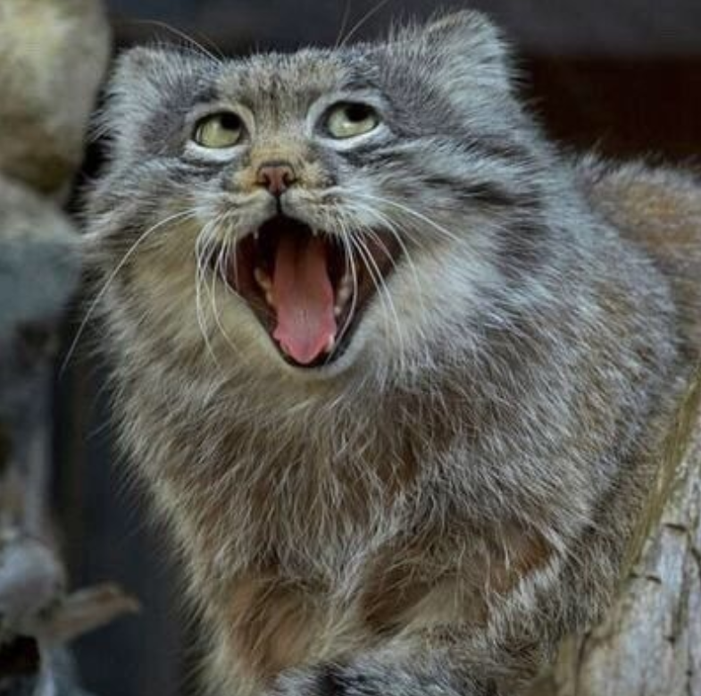

Team04
Team04 is a dynamic and innovative group of developers, designers, and financial experts specializing in supporting people worldwide to enhance their trading skills and gain a deeper understanding of financial markets. We are passionately committed to breaking down barriers to access quality financial education and fostering a community of well-informed, confident traders.
Our mission at Team04 is to democratize access to high-quality trading knowledge and training. We firmly believe that everyone, regardless of their background or prior experience, has the potential to become a successful trader. The Trading Trainer is more than just a training program – it is a tool for personal and financial growth.
By combining cutting-edge technology, practical content, and a supportive community, we strive to empower a new generation of traders. At Team04, we take pride in making a positive contribution to the financial education landscape and look forward to developing pioneering solutions in the future.
Team04 stands for innovation, collaboration, and excellence. Our commitment to quality and user satisfaction drives us to constantly seek improvements and new opportunities to meet the needs of our users. Together, we are working to revolutionize the way people learn and practice trading.
Our Team:
Manuel Groß

Our project leader, Manuel Groß, is the heart of Team04. With a remarkable work ethic and unwavering dedication to the project, he drives the team to peak performance. His passion for the project and commitment are unmistakable, inspiring the entire team to always strive for the best.
Manuel is known for his diligence and willingness to tirelessly work on tasks to ensure the project's goals are achieved. His work ethic is exemplary, and he is always ready to go the extra mile to overcome challenges and find solutions.
Despite his remarkable skills and dedication, Manuel also faces his challenges. He occasionally struggles with minor issues of aggression, but they do not affect his leadership style. Rather, he has learned to recognize these challenges and actively work on improving himself and dealing constructively with stress.
Under Manuel's leadership, the team has made significant progress. His ability to manage complex projects and motivate the team has greatly contributed to the success of Team04. Manuel is not only an outstanding project leader but also a mentor who fosters the growth and development of his team members.
Manuel Groß stands for determination, commitment, and continuous personal growth. His leadership qualities and ability to bring out the best in his team make him an indispensable part of Team04.
~ will often be stopped by the police later
Julian Schwendtbauer

Our cleaning specialist, Julian Schwendtbauer, is an essential pillar for the smooth functioning of Team04. With his meticulous work and dedication, he ensures that our workspace is always clean and welcoming. Julian's commitment to his role significantly contributes to a pleasant and productive work environment.
Julian is renowned for his meticulous approach to work and his tireless effort to excel in every task. His attention to detail and unwavering dedication ensure that our office spaces are always in top-notch condition, promoting the well-being and productivity of the entire team.
Despite his excellent work ethic, Julian faces his own challenges. He tends to have a mild addiction to computers, which can sometimes distract him from his tasks. Additionally, during his semester abroad with a tribal community, he developed some linguistic quirks, occasionally causing him to forget some aspects of the German language. However, these unique experiences have also made him adaptable and resilient.
Despite his challenges, Julian is an indispensable part of Team04. His ability to adapt to various situations and his positive attitude make him a valued colleague. He brings a unique perspective and vibrancy to our team, enriching our collaboration and fostering creativity.
Julian Schwendtbauer epitomizes dedication, adaptability, and the willingness to always give his best despite personal challenges. His presence and commitment are a significant contribution to the success and well-being of Team04.
~ rarely has the right instincts, always following his nose, massive, crooked schnozzle
Michael Oswald
Our designer, Michael Oswald, also known as the "Medienkasperl", is a creative genius and an indispensable force at Team04. With his meticulous eye for detail and always open and honest communication, he ensures that our projects are visually appealing and user-friendly.
Michael is renowned for his meticulous work ethic. No detail is too small for him, and he always strives for perfection in his designs. His openness and honesty ensure that the team consistently receives clear and direct feedback, which continuously improves the quality of our work.
Despite his professional strengths, Michael also faces his challenges. He has a slight nicotine addiction, which manifests through constant snus use. This habit sometimes affects his health, but he is working to overcome this challenge. Another, more serious aspect is that there are reports of slaves in the basement, which is absolutely unacceptable and not in line with Team04's values.
Despite these challenges, Michael has an enormously positive impact on our team. His creativity and sense of aesthetics have significantly shaped Team04's visual identity. He inspires the team to explore new and innovative design approaches and elevate our projects to the next level.
Michael Oswald embodies creative excellence, transparency, and meticulous work. Despite his personal challenges, he significantly contributes to Team04's success and ensures that our visual and aesthetic standards are always at the highest level.
~ (falls backwards down the stairs) WATCH OUT!!